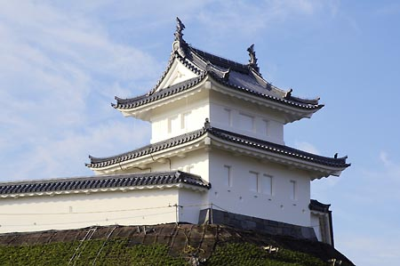
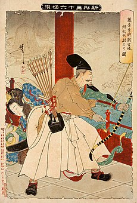
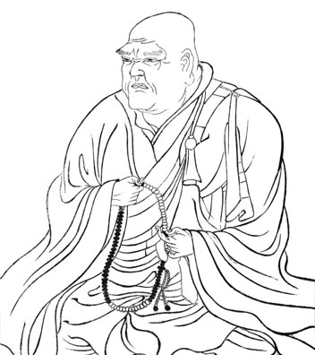
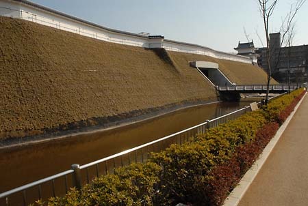
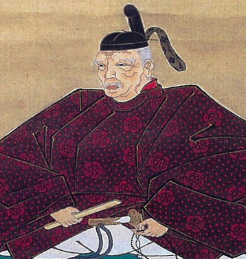
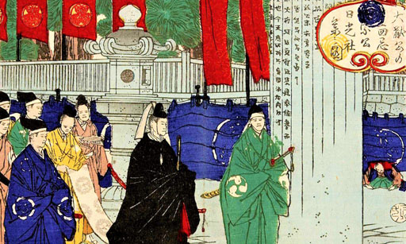
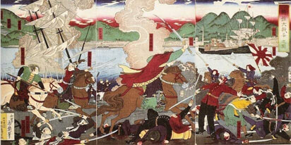

宇都宮城の歴史
宇都宮城の始まり（平安時代後期）
 
宇都宮城を築いたのは、藤原秀郷とも藤原宗円（宇都宮氏の祖）とも言われ築城年代は平安時代後期と考えられており、
二荒山の南に居館を構えたのが初めと言われています。
※左＝”宇都宮城” 右＝”藤原秀郷”
鎌倉時代から戦国時代
 
中世（鎌倉時代から戦国時代）の城主であった宇都宮氏は、鎌倉幕府の有力な御家人であるとともに京都ともつながりが深く、5代頼綱（よりつな）（蓮生・れんしょう）は百人一首の成立にも深くかかわっていました。
日本中が戦乱に巻き込まれた南北朝時代から戦国時代、このころの宇都宮城は敵の攻撃に備えるため、堀と土塁を幾重にもめぐらせた守りの堅い城になっていきました。
宇都宮城をめぐっての戦いも行なわれ、城下町が焼かれたこともありました。
※左＝”3代目当主 宇都宮朝綱” 右＝”現存する土塁跡”
江戸時代
 
約500年間宇都宮を支配してきた宇都宮氏は、豊臣秀吉に滅ぼされ、近世（江戸時代）には譜代大名の居城となりました。その中でも本多正純（ほんだまさずみ）は、城と城下町の大改造を行い、今日の宇都宮の中心市街地の骨格を作り上げたと言われています。
将軍が日光にお参りする日光社参（にっこうしゃさん）。宇都宮城は将軍の宿泊場所となり、本丸には将軍のための御成御殿（おなりごてん）が建てられました。日光社参は幕府の威信をかけた大事業であり、城も城下町も大変なにぎわいだったと言われています。
※左＝”正純 父 本多正信” 右＝”日光社参”
戊辰戦争以降

宇都宮城は1868年の戊辰（ぼしん）戦争で建物の大半が焼失しました。堀も次第に埋められて、当時の面影をしのぶものはほとんどなくなりました。
※"戊辰戦争"